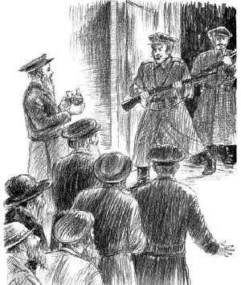
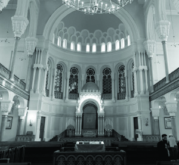
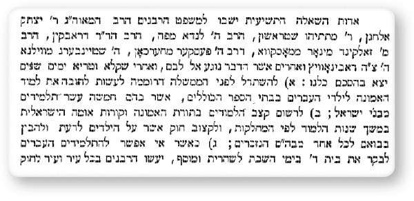

Storms in the South
To mark Beis Iyar, the birthday of the Rebbe Maharash, we present this historical piece about the lobbying efforts made by the Rebbe Maharash in Petersburg in 5639-5642. * From the book “Toldos Chabad B’Peterburg”
edited by R’ Shneur Zalman Berger.

Pogroms. What horrors lie within that one word that speaks of the devastation wrought upon the Jews of Russia especially under the reign of the Czars. The incited masses vented their anger upon the Jews, breaking into homes and causing grievous bodily damage and death as well as ruination and theft of property. Pogroms were a recurring problem at this time and others, and each time many Jews were killed and maimed as anti-Semitism reared its ugly head.
Many efforts were made in the capitol city to quell these riots. The Rebbe Maharash traveled to Petersburg time after time, as well as to other areas, in order to lobby for government intervention to stop the pogroms.
During the pogroms known as the Kiev-Niezhin pogroms which occurred in 1879, the Rebbe Maharash worked diligently to end them for they cost many lives and caused tremendous damage to Russian Jewry.
The pogroms began in the summer following a period of anti-Semitic incitement led by owners of forests in Smolensk, Paskov and Minsk. They were jealous of the successful Jewish lumber merchants and they provoked the peasants to start up with the Jews. This instigation was successful and pogroms soon began in a number of towns. They spread like wildfire and the Jews of Kiev, Niezhin and many other locations were hit hard.
In the winter of 5640, the Rebbe Maharash traveled to Petersburg and Moscow time after time in order to try to quell the pogroms. When he saw that these trips were unsuccessful, he went to Germany and France to meet with Jewish men of influence. He did not return home and to his Chassidim in Lubavitch after his trip to Western Europe. Instead he went directly to Petersburg, the capitol of Russia, in order to continue working on getting the pogroms to cease.
Upon arriving in Petersburg he met with some senior ministers, but to his dismay, as opposed to the previous times when they welcomed him warmly and promised to help, this time he was received coolly and received noncommittal responses.
The Rebbe Maharash did not give up. His next step was to arrange a meeting of Jewish activists and wealthy men who lived in Petersburg. He suggested they choose two men to join him in visiting the Interior Minister in order to ask him to arrange a meeting for them with the Czar.
A DIFFICULT MEETING
After only one week, the Rebbe was able to meet with the Interior Minister. He was accompanied by two distinguished Chabad Chassidim, R’ Chaim Mashayev and R’ Nachum Hermant. The meeting was particularly difficult. The minister was willing to meet with the Rebbe and was respectful, being impressed by the Rebbe’s personality, but when it came to the Rebbe’s request to stop the pogroms, he spoke sharply. He censured the Rebbe for operating against the kingdom and even worse, traveling abroad to make Russia look bad to other nations, a move for which he deserved a severe punishment as a traitor.
The Rebbe listened to these harsh words and wasn’t intimidated. He responded firmly, “What does the government think, that our blood and the blood of our sons and daughters will be spilled and our property looted and we will yet bow and kiss the hands of murderers and robbers? No! We are citizens of the country who fulfill our obligations bodily and financially toward the government like all citizens, and how shameful it is that they prevented us from living throughout the country and made a Pale of Settlement for Jews in limited districts, and in addition to this, the government will lend a hand of support to criminals and depraved people to carry out pogroms against our wives and children and us when we have no protection? As citizens of the country we demand that the government protect our lives and our property!
“The purpose of this meeting is to inform the Interior Minister in my name and in the name of all Jewish citizens of the country that I want an audience with the Czar to speak to his majesty about our situation and to hear clearly whether our sentence of death through murderers and robbers goes forth from him. For the words of ministers and their assurances have gone to naught and in our eyes they are worth… In the name of justice and righteousness I ask the Interior Minister to fulfill our request.”
The minister was taken aback to hear these sharp words and he remained silent. After a few moments of silence he said that in a few days he would have a response and he hoped the matter would end well.
HOUSE ARREST
The Rebbe’s tough stance aroused the ire of the government, which decided to place him under house arrest in the place he was staying, the Sierpinski hotel on Zablacanski Street. The intense encounter weakened the Rebbe and upon arriving at the hotel he was very weak. He sat on a chair to rest and said, “This visit cost me a lot in my health, but with Hashem’s help it will lead to the desired result and raise the honor of Israel.”
His feeling of weakness intensified over the next few hours, and in the evening the Rebbe fainted. Professor Dr. Bertenson, who was a big help in arranging the meeting with the Interior Minister, was called to see the Rebbe. He gave the Rebbe medication, and while treating him expressed his surprise over the Rebbe disregarding his health and doing things that adversely affected his health because even a bit of excitement was dangerous for him. The Rebbe said:
“We are not under our own control. Our bodies, our nefesh, our ruach, our neshama are given solely for what pertain to the Jewish people’s spirituality and physicality. True, the arrows of our enemies and foes and those who ostracize us break our bodies to pieces and embitter our lives, but in this way we save and defend the Jewish people.”
Dr. Bertenson told the Rebbe to leave the city immediately and to stay in a nearby town where the air was good, because of his health. House arrest ended after a few days and the Rebbe traveled to a nearby village where he stayed for a few days. When he felt stronger he traveled to Tsarskoye Selo in the suburbs of Petersburg in order to wait for the minister’s response.
Ten days passed and the Rebbe Maharash had another meeting with the Interior Minister, who received the Rebbe with great respect. At the beginning of the meeting, the minister said he was unable to arrange a meeting with the Czar. However, regarding the position of the Jews, he said that the government had taken significant steps, and from here on in nothing bad would happen to the Jews.
The Rebbe remained in Tsarskoye Selo for an additional week to regain his strength and then he returned to Lubavitch. He arrived on 12 Tammuz, the day his grandson, later to be the Rebbe Rayatz, was born. 47 years later it would also be the day of his release from prison.
The Rebbe Maharash’s efforts in the capitol city had immediate results. Within just two weeks, all district governors received orders to announce that if anyone was found instigating altercations among citizens of the realm, or if anyone was found calling for disturbances, i.e. pogroms, he would be severely punished. The pogroms ended and the Jews in all towns of Russia breathed a sigh of relief.
INTERVENTION FOR THE UKRAINE
Just nine months passed and a wave pogroms began once again, later called “storms in the Negev,” because the pogroms spread quickly like a storm and they took place in the southwest of Russia. In Adar II 5641/1881, Czar Alexander II was assassinated in Petersburg. The Ukrainian newspapers reported that the Czar had been killed by Jews and this resulted in a wave of violence mainly against the Jews of the Ukraine.
The pogroms raged through the Ukraine, and Jewish Petersburg was in turmoil. Jewish activists in Petersburg tried through many channels to get things to quiet down. Alexander Cedarbaum, editor of HaMeilitz, was the first to lobby for cessation of the murderous pogroms.
Together with Dr. Abraham Drabkin, the government-appointed rabbi in Petersburg, Cedarbaum visited with the head of the Synod (an assembly of priests) and the two begged them to publicize an order to all priests in the country to act lovingly toward all creations and not to attack Jews.
They promised to follow through, and an order was given in Kiev to all priests in the Ukraine to order a halt to pogroms.

The next step was a meeting with the new czar, Alexander III. A delegation of five distinguished Jews from Petersburg, including Baron Hirsch Ginsburg, met with the Czar. The meeting lasted only seventeen minutes, while the Jews of Petersburg, who had gathered in shul, shed tears and pleaded to Hashem that the Czar do what he could to stop the pogroms.
In HaMeilitz, this is described in detail:
“At 12, they were called to come inside the palace and were led to the king’s office. They had nearly reached the room when, from the door facing them, emerged the Czar, dressed as a general. He approached the representatives, and Baron Ginsburg, after bowing to the Czar, introduced his colleagues. The Czar asked each of them their work and occupation. Then Baron Ginsburg approached the Czar and said, ‘Our master the Czar, we are pleased to place before the feet of the Czar in the name of Russian Jewry our deepest feelings as loyal servants, and endless thanks for the stratagems that were employed to protect the Jews in this time of distress. One order of the king and the upheavals will cease. Your majesty, gaze with love and kindness upon all your faithful servants equally, without differentiating based on nationality and faith.’
“His majesty, in his abundant kindness, deigned to respond by saying he would gaze with truth upon all his loyal servants no matter their faith and nationality. He said that ‘with the terrible upheavals and crimes in southern Russia, the Jews were merely a pretext and all this was the work of rebels against the kingdom.’”
The Czar also heard from other members of the delegation and it was all done graciously. The Czar was told that it wasn’t good that the Jews lived in crowded conditions as a result of the laws of the Pale of Settlement. One member of the delegation said that the Jews were willing to be Russians of the Mosaic faith. The Czar was happy to hear this and told the delegation to submit their view of the matter under discussion in writing to the Interior Minister.
The Czar said that he assumed that the economic situation led the peasants to believe that the Jews exploited them and this was their excuse for the outbreaks of violence.
At this meeting, plans for a large shul in Petersburg were decided upon.
The members of the delegation and the leaders of the Jewish community were pleased, even though they did not receive any explicit promise. The next day, the members of the community gathered in shul and thanked G-d for the Czar receiving them graciously and speaking against the hooligans.
Unfortunately, the hopes the Jews had pinned on the priests and the Czar were dashed. Not only didn’t the pogroms stop, they spread rapidly and even more cruelly throughout the Ukraine, Serbia, Podolia, Lithuania, and even reached Warsaw in Poland.

MEETING OF RABBIS IN THE BARON’S HOME
Some maintain that these pogroms were in fact outbreaks by anti-Semites who were incited by local leaders, but others think that it was organized by the central government that covered its tracks in various ways. R’ Yaakov Lifshitz, later the rav in Kovna, was a distinguished rabbi of the time. He repeatedly emphasizes in his memoirs that it was the government that organized and stood behind these pogroms.
The great rabbinic figures of the time worked intensively on this matter, with their goal to stop the pogroms at any cost. R’ Yosef Dov Soloveitchik called for a meeting of rabbanim in Brisk in which they would try to seek ways of dealing with the terrible situation that pogroms brought upon Russian Jewry.
Baron Ginsburg received government permission to hold a convention of rabbanim and askanim from all over the country. With the consent of the great rabbis of Russia, Lithuania, and Poland a meeting was held. It began in Petersburg on Sunday, 17 Elul 5641/1881 with 56 rabbis in attendance including R’ Yitzchok Elchonon Spektor, Rav and Av Beis Din of Kovna. At his side throughout stood the rav of the Chassidic community in Petersburg, R’ Yekusiel Zalman Landau, one of the distinguished Chabad rabbis at the time.
At this convention, which took place at the baron’s house, there were rabbanim, government-appointed rabbis, top doctors, lawyers and others. The convention officially ended on 25 Elul after resolutions were made about how to stop the pogroms and the nonstop incitement against the Jews.
At the convention, it was decided that they speak once again to the Interior Minister. It was also decided to help Jews buy tracts of land so they could support themselves in dignity. As for the anti-Semitic incitement in the newspapers, it was decided that certain knowledgeable individuals would read all the newspapers and write articles in response to the anti-Semitic articles. In addition, they would occasionally publish booklets written in layman’s language which explained how the Jews were right and the complaints against them in the papers were false with no basis whatsoever. Aside from that, they made resolutions to strengthen chinuch.
On the day the convention ended, the rabbanim met with the Interior Minister and spoke to him about timely matters, the pogroms in particular.
Along with the activities done to prevent pogroms, Baron Ginsburg also provided much help for those who had been injured in the pogroms, many of whom remained maimed and penniless.
The results of the convention did not have any noticeable impact since the participants were only religious and lay leaders and did not include recognized leaders or official representatives; at least that was the view of Baron Ginsburg. So half a year later, in Iyar 5642/May 1882, another convention was held. Jewish communities were asked to hold elections in which they would decide who would be their representatives at this convention.
The Rebbe Maharash went to Petersburg several more times to continue his work in quelling the pogroms and even stayed in that city for a long period of time. He held meetings and did a great deal of lobbying for the betterment of the Jews. The Rebbe Maharash and R’ Yaakov Lifshitz of Kovna corresponded and arranged how to choose the best representatives.
The second convention also took place under the direction of Baron Ginsburg, with the full cooperation of the Jewish leaders in Russia at that time. During the convention, one of the issues they raised was that of Jewish settlement and they discussed the question of whether to leave Russia or settle in other parts of the country which seemed to be relatively safer.
The pogroms quieted down. Petersburg continued to be a city that hosted conventions of rabbanim that were organized in the years to come by Baron Ginsburg and the industrialist Samuel (Shmuel) Polyakov. At these conventions, they discussed the burning issues of the day that pertained to Russian Jewry.
Beis Moshiach (staff). "Storms in the South." Beis Moshiach, no. 924 (April 30, 2014).